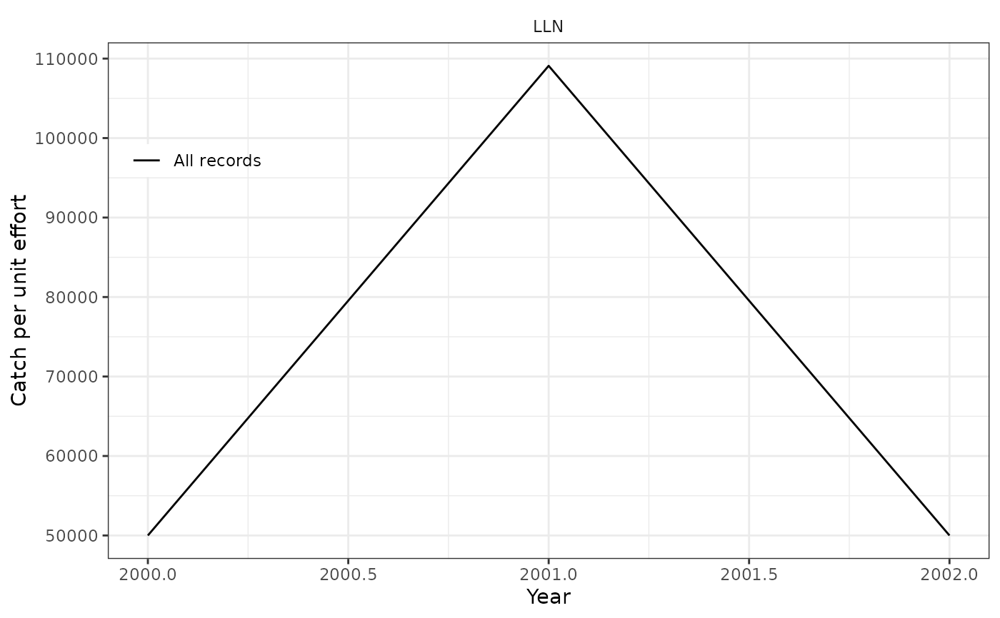

Calculate CPUE, create plot from logbook data
Arguments
- tbl
A dplyr query from a logbook table
- effort_na
Effort of records with none of
tow_time,tow_hooksortow_num_nets(e.g. a bottom trawl haul without tow time). Default1, i.e. one hour, as before;NULLleaves them out- year_end
Filter any data at/after this year
- limit
Ignore records over this proportion of
catch_total
Value
Examples
pcon <- pax::pax_connect(":memory:")
#> duckdb keeps downloaded extensions and secrets in a temporary directory:
#> ℹ /tmp/RtmppkFpVP/duckdb
#> This is removed when the R session ends.
#> • Extensions are re-downloaded each session.
#> • Secrets are lost.
#> ℹ Run duckdb(shared_home = TRUE) (or create ~/.duckdb) to keep them (suitable for most users).
#> ℹ Run duckdb(shared_home = FALSE) to accept the temporary directory (and silence this message).
#> ℹ See ?duckdb_storage for details and alternatives.
# NB: Ordinarily this would be fed in by pax::pax_mar_logbook()
pax_import(pcon, read.table(text = "
year mfdb_gear_code tow_hooks tow_time tow_num_nets catch catch_total
1 2000 LLN 1 120 5 1e5 10e5
2 2001 LLN NA 110 NA 2e5 10e5
3 2002 LLN NA 120 NA 1e5 10e5
"), name = "ex_logbook")
dplyr::tbl(pcon, "ex_logbook") |> pax_add_cpue() |> pax_logbook_cpue_plot()
